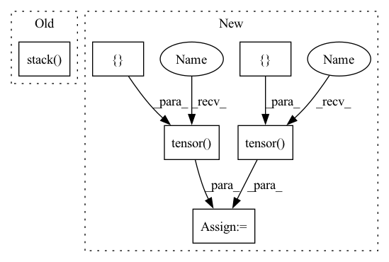

Pattern ID :6065

Before Change
output_probs = torch.sigmoid(sample_output)
sample_target = [render_gaussian_kernel(torch.zeros(self.OUTPUT_SIZE,self.OUTPUT_SIZE),64,64,10,20) for _ in range(10)]
sample_target = torch.stack(sample_target, dim=0)
focal_loss = FocalLossWithLogits(alpha=2, beta=4)
assert torch.abs(focal_loss(sample_output, sample_target) - reference_focal_loss(output_probs, sample_target)) < 1e-3
After Change
output_probs = torch.sigmoid(sample_output)
centers = torch.tensor([[10,10], [20,30], [14,30]])
sizes = torch.tensor([[10,10], [10,20], [30,30]])
indices = torch.tensor([1,0,2])
mask = torch.tensor([1,1,0])
sample_target = render_target_heatmap(self.HEATMAP_SHAPE, centers, sizes, indices, mask)
focal_loss = FocalLossWithLogits(alpha=2, beta=4)
loss1 = focal_loss(sample_output, sample_target)
In pattern: SUPERPATTERN
Frequency: 3
Non-data size: 6
Instances
Fragment ID: 21066048
Project Name: gau-nernst/centernet-lightning
Commit Name: ec606be569e9df24f7e5c15bef3581b86a63d881
Time: 2021-05-31
Author: gau.nernst@yahoo.com.sg
File Name: losses_test.py
M Class Name: TestLosses
N Class Name: TestLosses
M Method Name: test_focal_loss(1)
N Method Name: test_focal_loss(1)
M Parent Class:
N Parent Class:
M File Name: losses_test.py
N File Name: losses_test.py
M Start Line: 20
M End Line: 27
N Start Line: 21
N End Line: 34
'>
Before Change
output_probs = torch.sigmoid(sample_output)
sample_target = [render_gaussian_kernel(torch.zeros(self.OUTPUT_SIZE,self.OUTPUT_SIZE),64,64,10,20) for _ in range(10)]
sample_target = torch.stack(sample_target, dim=0)
focal_loss = FocalLossWithLogits(alpha=2, beta=4)
assert torch.abs(focal_loss(sample_output, sample_target) - reference_focal_loss(output_probs, sample_target)) < 1e-3
After Change
output_probs = torch.sigmoid(sample_output)
centers = torch.tensor([[10,10], [20,30], [14,30]])
sizes = torch.tensor([[10,10], [10,20], [30,30]])
indices = torch.tensor([1,0,2])
mask = torch.tensor([1,1,0])
sample_target = render_target_heatmap(self.HEATMAP_SHAPE, centers, sizes, indices, mask)
focal_loss = FocalLossWithLogits(alpha=2, beta=4)
loss1 = focal_loss(sample_output, sample_target)
'>
Fragment ID: 21066050
Project Name: gau-nernst/centernet-lightning
Commit Name: ec606be569e9df24f7e5c15bef3581b86a63d881
Time: 2021-05-31
Author: gau.nernst@yahoo.com.sg
File Name: losses_test.py
M Class Name: TestLosses
N Class Name: TestLosses
M Method Name: test_focal_loss(1)
N Method Name: test_focal_loss(1)
M Parent Class:
N Parent Class:
M File Name: losses_test.py
N File Name: losses_test.py
M Start Line: 20
M End Line: 27
N Start Line: 21
N End Line: 34
'>
Before Change
loop_vars=(0, initial_state["velocity"],
tf.TensorArray(tf.float32, num_steps)),
parallel_iterations=1)
return output.stack()
def evaluate(model, inputs):
Performs model rollouts and create stats.
After Change
def _rollout(model, initial_state, num_steps):
Rolls out a model trajectory.
node_type = initial_state["node_type"]
mask = torch.logical_or(torch.eq(node_type[:, 0], torch.tensor([common.NodeType.NORMAL.value], device=device)),
torch.eq(node_type[:, 0], torch.tensor([common.NodeType.OUTFLOW.value], device=device)))
mask = torch.stack((mask, mask), dim=1)
def step_fn(velocity, trajectory):
with torch.no_grad():
'>
Fragment ID: 21066101
Project Name: wwmark/meshgraphnets
Commit Name: 1ad048efb0f606f799674edb4d16a0554e54bf28
Time: 2021-10-24
Author: ruoheng.ma@gmail.com
File Name: cfd_eval.py
M Class Name: AnonimousClass
N Class Name: AnonimousClass
M Method Name: _rollout(3)
N Method Name: _rollout(3)
M Parent Class:
N Parent Class:
M File Name: cfd_eval.py
N File Name: cfd_eval.py
M Start Line: 26
M End Line: 44
N Start Line: 27
N End Line: 45
'>
Before Change
// See paper p13
thetas = torch.arange(self.n_heads, dtype=torch.float32) * (2.0 * math.pi / self.n_heads)
grid_init = torch.stack([thetas.cos(), thetas.sin(), thetas.cos()], -1) // TODO
// [NumHeads, FeatureLevels, NumPoints, Offset]
grid_init = (grid_init / grid_init.abs().max(-1, keepdim=True)[0]).view(self.n_heads, 1, 1, 3).repeat(1, self.n_levels, self.n_points, 1)
After Change
constant_(self.sampling_offsets.weight.data, 0.)
// See paper p13
grid_init = torch.cartesian_prod(torch.tensor([-1, 0, 1]), torch.tensor([-1, 0, 1]), torch.tensor([-1, 0, 1])).to(dtype=torch.float32)
if self.n_heads == 26: // sample in 26 directions
grid_init = grid_init[torch.nonzero(torch.abs(grid_init).sum(dim=1)).squeeze()] // Get rid of origin
elif self.n_heads == 6: // sample in 6 directions
grid_init = grid_init[torch.nonzero(torch.logical_and(torch.abs(grid_init).sum(dim=1) < 2, torch.abs(grid_init).sum(dim=1) > 0)).squeeze()]
else:
raise ValueError("Only nheads of value 26 or 6 are supported.")
'>
Fragment ID: 21066071
Project Name: bwittmann/transoar
Commit Name: fa86cda78f79e61cc6617f73268e684f56636b3f
Time: 2021-12-16
Author: bastian.wittmann@tum.de
File Name: transoar/models/ops/modules/ms_deform_attn.py
M Class Name: MSDeformAttn
N Class Name: MSDeformAttn
M Method Name: _reset_parameters(1)
N Method Name: _reset_parameters(1)
M Parent Class: nn.Module
N Parent Class: nn.Module
M File Name: transoar/models/ops/modules/ms_deform_attn.py
N File Name: transoar/models/ops/modules/ms_deform_attn.py
M Start Line: 66
M End Line: 70
N Start Line: 66
N End Line: 75